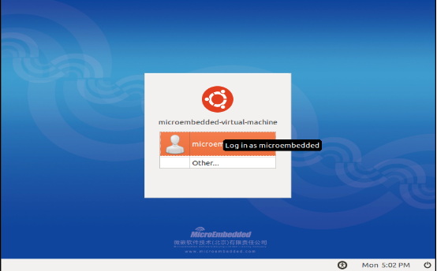
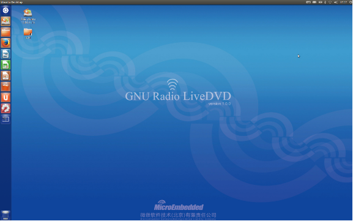
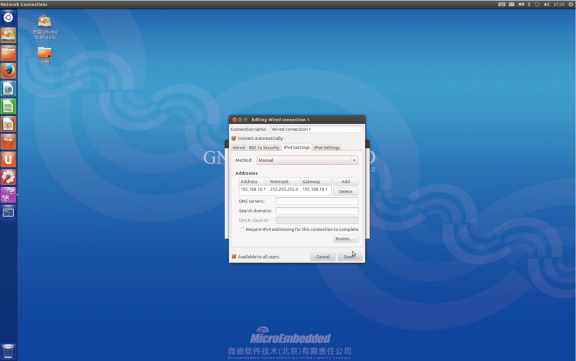
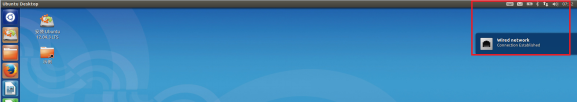
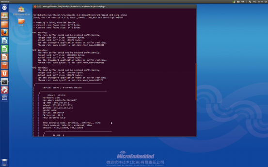
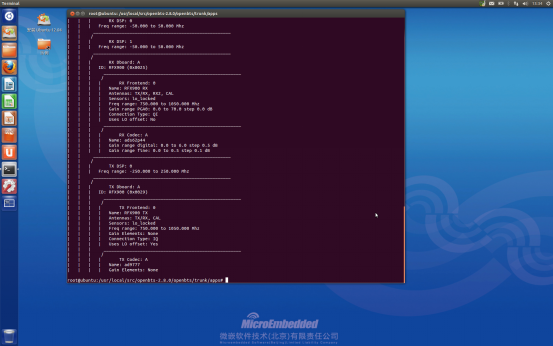
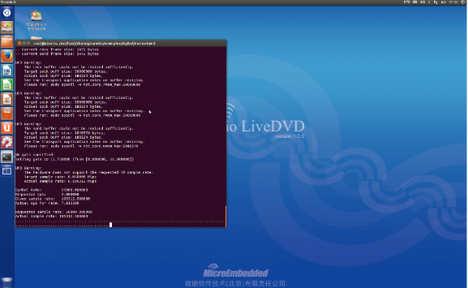
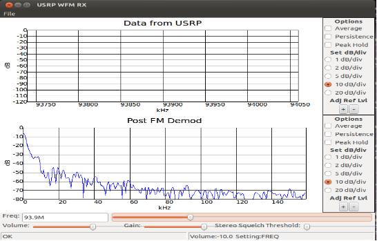

N210系统安装测试
一、设置光驱启动
1、开启计算机，进入系统之前按F12（不同厂商之间可能有所差别）。
2、进入BIOS之后以方向键选择[BIOS Features Setup]或者[Advanced BIOS Features]，不管如何，只要看到[BIOS Features]字样的那一项就对了。
3、将方向键移动至[Boot Sequence]或者[First Boot Device]这一项，按键盘上的[Page Up]或者[Page Down]按键，选择[CD-ROM]为第一开机顺位即可。
4、如图图片1有两种模式：
1) 使用Ubuntu（使用光盘里的系统）。
2) 安装Ubuntu。
5、将方向键移动至[Save and Exit]这一项，然后按[Enter]及[Y]确认后重新开机。
二、安装光盘中的Ubuntu系统
1、插入光盘，启动计算机后，会依次出现以下画面：

图片1
系统默认为[English]（当然也可以选择简体中文）,右边有两个选项[试用Ubuntu]和[安装Ubuntu]；
2、（1）点击[试用 Ubuntu]可以启动光盘中的Ubuntu系统，如下图所示：

图片2
这里可以运行各种测试程序，完成对实验平台的测试，但是速度较慢，如需现阶段就开始测试实验平台，请跳至下面的【三】继续阅读；如需将系统装入您的计算机，请继续阅读；
（2）点击[安装 Ubuntu]可以将Ubuntu系统装入计算机，如下图所示：

图片3
点击[Forward]继续安装：

图片4
如果您的计算机中已装有其他操作系统会出现如上图所示的三个选项：
第一项为本系统和计算机中的其他操作系统共存；
第二项为擦除硬盘上的数据后将系统装在硬盘上；
第三项为手动选择安装模块；
如果需要安装双系统则选：第三项手动选择安装模块
这里，我们选择第一项，然后点击[Continue]:

图片5
3、在安装过程中会以下出现如下画面完成您对系统的个人配置：
选择您所在的时区如：shanghai
然后点击[Forward]:

图片6
选择键盘布局，默认为USA，点击[Forward]:

图片7
输入姓名、密码和密码确认，默认[Require my password to log in]即需要密码登入，点击[Forward]:

图片8
等待系统安装完成，需要一段时间，期间可以点击左右拉箭头阅读系统的一些介绍：

图片9
完成后会出现如下画面，系统询问是否重启，点击[Restart Now]；重启之前，请将计算机调回硬盘启动（参照第一步）；

图片10
至此Ubuntu系统已经安装完成。
4、重新开机后会出现如下画面:

图片11
输入密码登入刚才安装的Ubuntu系统：

图片12
三、测试实验平台的完整性
<1> 将实验平台的IP为：192.168.10.1。
鼠标点击图片13红色方框位置后—>Edit Connections… 如图片13图：

图片13
<2>选择WiredWired connection1EditIPv4 SettingsMethod(Manual)
Addresses(Add).如图图片14设置 Address Netmask Gateway

图片14
<3> N210通电与系统网线连接, 如图片15

图片15
<4>快捷键：Ctrl+Alt+T 打开终端，切换到root用户模式，即“sudo su 回车，输入root密码即可” 。
检测N210与电脑相连：uhd_find_devices

图片16
<5>检测下N210插子板可查看配置信息uhd_usrp_probe：

图片17

图片18
<6>以WBX子板为例，benchark发送1800M的信号
cd /usr/local/share/gnuradio/examples/digital/ofdm/
./benchmark_tx.py –f 1800M

图片19
<7>以WBX子板为例，uhd接收900M的信号
uhd_fft –f 1800M

图片20
<8>实例测试
1.FM测试
实验准备：
1.一台USRP N210设备
2.一块WBX子板
3.两根馈线
4.两根天线
5.一个6V电源
6.一根网线
实验步骤：
Root用户下终端输入以下命令：
#cd /usr/local/share/gnuradio/examples/uhd
#sudo ./usrp_wfm_rcv_pll.py

图片21
2.OpenBTS测试
实验准备：
1.一台USRP N210设备
2.一块RFX900子板或者一块WBX子板
3.两根馈线
4.两根天线
5.两张SIM卡（我们自己刷写的）
6.一个6V电源
7.一个网线
8.两个电话
实验步骤：
切换到root用户终端输入下面命令
#sudo su
#asterisk
#asterisk –rx ＂sip reload＂
#asterisk –rx ＂dialplan reload＂
#mkdir –p /var/run/OpenBTS/
运行OpenBTS
#cd /IPLinkME /src/openbts-2.8.0/openbts/trunk/apps/
#./OpenBTS
查看OpenBTS基站的相关信息
#cd /IPLinkME /src/openbts-2.8.0/openbts/trunk/apps/
#./OpenBTSCLI
Config
通过下面的命令来查看手机连接到基站
#asterisk –rvv
#sip show peers
两个电话被连接到基站，就可以完成语音通信，

图片22